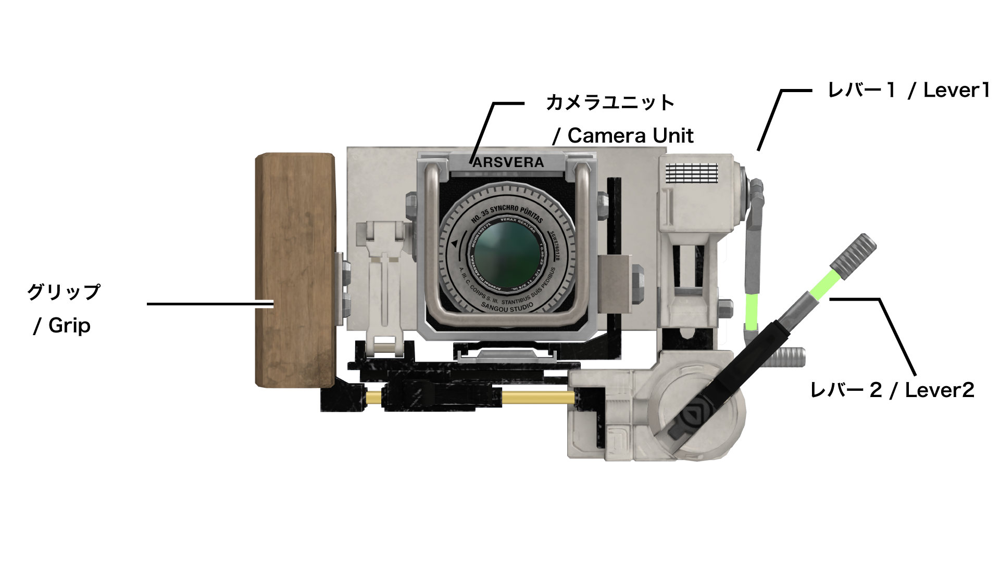
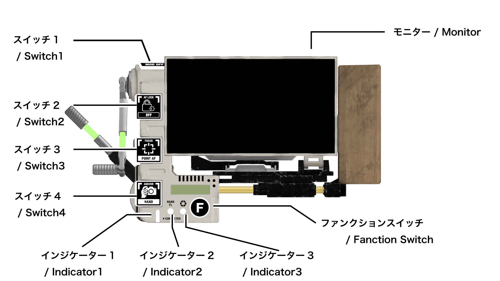

VR169の操作
操作説明動画
- VR169 クイックスタート 1.2.0対応版https://youtu.be/YmkkYrfky-M
- VR169 操作説明動画 1.2.0対応版＊現在制作中
各部名称


起動と終了
起動
連携起動
- VRChat標準カメラを起動します。
- 自動的にVR169が起動します。
VR169 Companionが起動している必要があります。
連携起動を行わない場合はVR169のExメニューから設定を行ってください。
VR169とVR169 Companionの接続開始から約２秒間は連携起動が行われません。連携起動を行わない場合はVR169のExメニュー（Settings ➜ VR169 Companion ➜ AutoActive 連携起動）から無効化してください。一度オフにすれば設定は維持されます。
ジェスチャーとアバターの動作よる起動
- 視界の中央付近でカメラハンドの『手の甲側』の手首を見ます。
- カメラハンドのジェスチャーをFistにします。
- 素早く手首を返し『掌側』の手首を見ます。
- さらに素早く手首を返し、もう一度『手の甲側』の手首を見ます。
- 手を招くようにスナップします。
VR169を非表示の状態から表示させる際も、同じ手順で操作します。
ExMenuからの起動
- VRChatのExpressions MenuからVirtualLens2を起動してください。
終了
連携終了
- VRChat標準カメラを起動します。
- 自動的にVR169が起動します。
VR169 Companionが起動している必要があります。
連携起動を行わない場合はVR169のExメニューから設定を行ってください。
VR169とVR169 Companionの接続開始から約２秒間は連携起動が行われません。連携起動を行わない場合はVR169のExメニュー（Settings ➜ VR169 Companion ➜ AutoActive 連携起動）から無効化してください。一度オフにすれば設定は維持されます。
ジェスチャーとアバターの動作よる終了
VR169が非表示の状態では不意の動作による誤終了を防ぐため、この操作は無効になります。終了する場合は一度表示させてください。
- 視界の中央付近でカメラハンドの『手の甲側』の手首を見ます。
- カメラハンドのジェスチャーをFistにします。
- 素早く手首を返し『掌側』の手首を見ます。
- さらに素早く手首を返しもう一度『手の甲側』の手首を見ます。
メニューからの終了
- VRChatのExpressions MenuからVirtualLens2を終了してください。
VR169 Companionとの接続確認
VR169とVR169 Companionが正常に接続されている場合、インジケーター１が点灯します。
レバーの操作と機能
VR169本体に搭載された2つのバーチャルレバーの機能について解説します。設定に応じて『ズーム』や『絞り』の操作を担うほか、マニュアルフォーカスなど直感的なアナログ入力を担当します。
展開と格納
基本的なレバーの操作方法について解説します。
展開・格納する
- インターフェース自動展開が有効な場合 VR169を視界に収め、フリーハンドをレバー付近に近づけると自動で展開されます。視界から外し、手を離すと格納されます。
- インターフェース自動展開が無効な場合 ExMenuを操作し、インターフェース手動展開の『展開』『格納』をオンに切り替えます。
基本機能
操作方法
- 掴む・動かす掴みたいレバーにフリーハンドを重ね、グラブしたまま手を動かします。手を離すとグラブを解除します。
各レバーの特性と標準設定
- レバー1標準の操作対象は『ズーム』です。ユーザーからの視点では直線的な上下操作となるため、操作方向はENGや電動ズームコントローラーなどの代表的な機材の上下操作に準拠しています。
- レバー２標準の操作対象は『絞り』です。ユーザーからの視点では回転操作となるため、操作方向は実在する写真機材およびシネマレンズの操作系を参考に設計しています。
通常時
ズームと絞りをそれぞれのレバーで操作可能です。
ExMenuによる設定で割り当てを反転させることが出来ます。
- 通常レバー選択『標準』
- レバー1：ズーム
- レバーを上げる： 焦点距離を長くする（被写体を大きく、狭い範囲を写す）
- レバーを下げる： 焦点距離を短くする（被写体を小さく、広い範囲を写す）
- レバー2：絞り
- レバーを上げる： 絞りを閉じる（ボケを少なくする）
- レバーを下げる： 絞りを開く（ボケを大きくする）
- レバー1：ズーム
- 通常レバー選択『入替』
- レバー１：絞り
- レバーを上げる： 絞りを開く（ボケを大きくする
- レバーを下げる：）絞りを閉じる（ボケを少なくする）
- レバー２：ズーム
- レバーを上げる： 焦点距離を短くする（ズームアウト、被写体を小さく、広い範囲を写す）
- レバーを下げる： 焦点距離を長くする（ズームイン、被写体を大きく、狭い範囲を写す）
フォーカスモード『マニュアル』時
手動でのピント調整（マニュアルフォーカス）を操作します。スイッチ操作、あるいは設定により、このレバーの役割を通常と同じ『ズーム』あるいは『絞り』に変更可能です。
- MFレバー選択：『レバー1』
- レバー1：マニュアルフォーカス
- レバーを上げる： ピント位置を遠くへ移動する
- レバーを下げる： ピント位置を近くへ移動する
- レバー2：通常時と同じ
- レバー1：マニュアルフォーカス
- MFレバー選択：『レバー2』
- レバー1：通常時と同じ
- レバー2：マニュアルフォーカス
- レバーを上げる： ピント位置を近くへ移動する
- レバーを下げる： ピント位置を遠くへ移動する
カメラ配置モード『自撮り』時
カメラとの距離を操作します。スイッチ操作、あるいは設定により、このレバーの役割を通常と同じ『ズーム』あるいは『絞り』に変更可能です。
- カメラ距離レバー選択：『レバー１』
- レバー１
- レバーを上げる： カメラを自分から遠ざける
- レバーを下げる： カメラを自分に近づける
- レバー2
- 通常時と同じ
- レバー１
- カメラ距離レバー選択：『レバー２』
- レバー１
- 通常時と同じ
- レバー２
- レバーを上げる： カメラを自分に近づける
- レバーを下げる： カメラを自分から遠ざける
- レバー１
拡張機能
クイックコール
レバーを掴んだ状態でトリガーを引くと、予め設定したVirtualLens2のクイックコールを呼び出します。レバー1とレバー2で別のクイックコールを設定可能です。どのクイックコールを割り当てるかは、ExMenuの設定から変更可能です。
【操作方法】
- レバーをグラブした状態で、フリーハンドのトリガーを引き、機能を実行します。
モニターの操作と機能
VR169本体に搭載された背面に搭載されたモニターの機能について解説します。撮影姿勢や構図の変更に合わせて、物理的な可動機構を備えています。
チルト
モニターの角度を上下に傾けることができます。カメラを目の高さに構えるだけでなく、胸から腰の位置にカメラを下ろして上からモニターを見下ろす『ウエストレベル撮影』を快適に行うことが可能です。
【操作方法】
- モニターの下部付近をグラブしたまま上下に動かし、好みの角度に調整します。
【補足】一点AFのフォーカスポイントが無駄に動かないように、やや下の方にグラブの位置をオフセットさせてあります。
レボルビング
VR169本体の向きや手首を捻ることなく、モニターとカメラセンサーのオブジェクトのみを回転させる機能です。構図の『横位置（水平）』と『縦位置（垂直）』を、楽な姿勢のまま瞬時に切り替えることができます。【操作方法】
- モニターをグラブした状態で、フリーハンドのトリガーを引きます。機能が実行されると、自動的にフリーハンドがモニターを離します。
【補足】
レボルビングとは、現実の大型・中判カメラ等に搭載されている、重いカメラ本体を三脚から動かさずにフィルムやセンサーを格納したパーツだけを回転させて構図を切り替える仕組みです。VR169では、プロフェッショナルには当たり前となっているこのスマートな構図変更を、実用的なVR体験として再現しています。
スイッチの操作と機能
VR169に搭載されたバーチャルスイッチの機能について解説します。スイッチを操作することで、ExMenuを開くことなく、VirtualLens2の各種機能を操作することが可能です。
基本的な操作方法
本体に搭載された各種スイッチの押し方について説明します。
ジェスチャーモードで入力する
フリーハンドのジェスチャーを切り替えることで、誤操作を防ぎながら確実にスイッチを入力する安全機構です。
【操作方法】
- 押したいスイッチを視界に収める。
- フリーハンドを『スイッチ用ジェスチャー（標準：Victory）』にする。
- 人差し指をスイッチに押し込み、そのまま離す。
- スイッチが入力され、対象の機能が実行されたらジェスチャーを解除する。
【補足】
- スイッチ用ジェスチャーは設定で変更可能です。
- 人差し指をスイッチから離さずにスイッチ用ジェスチャーを解除すると、機能は実行されず入力キャンセルとなります。
ダイレクトモードで入力する（※開発中）
ジェスチャーによる安全機構を省いた操作形式です。VRChat側でジェスチャーを無効にしたハンドトラッキング等での使用を想定しています。
ファンクション
スイッチ１〜４は、通常時の機能のほかに『ファンクションスイッチ』を押すことで、それぞれ別の機能へと役割を切り替えることができます 。
【操作方法】
- 本体のファンクションスイッチを押してから、目的のスイッチを入力します 。
- ファンクションを解除するには、スイッチ用ジェスチャーを解除するか、もう一度ファンクションスイッチを押します。
フォーカス
フォーカスモードの切り替え
VirtualLens2のフォーカスモードをVR169のスイッチ操作で切り替えます。
【操作方法】
- スイッチ3を押します。本体のスイッチが『フォーカスモード選択状態』に切り替わります。
- 適用したいモードに対応するスイッチを押します。
- スイッチ１：マニュアル（Manual）
- スイッチ２：一点AF（Point AF）
- スイッチ３：自撮りAF（Selfie AF）
- スイッチ４：顔検出AF（Face AF）
- 選択したフォーカスモードが適用され、スイッチは自動的に通常時の機能へと戻ります。
【操作中のキャンセル方法】
フォーカスモード選択状態で選択せずにスイッチを通常の状態に戻したい場合は、以下のいずれかの操作を行います。
- ファンクションスイッチを押します。
- スイッチ入力ジェスチャーを解除します。
フォーカスロック
VirtualLens2のフォーカスロック機能をVR169から操作します。ピントの位置を固定し、カメラの移動や周囲の動きによる意図しないピンボケを防ぐ機能です。本機能は、フォーカスモードが『一点AF』『顔認識』の場合のみ動作します。
【操作方法】
- スイッチ２を押します。有効と無効が切り替わります。
【補足】
カメラハンドのジェスチャーを使ってフォーカスロックをかけることも可能です。詳細は『カメラハンドの操作と機能』を参照してください。
フォーカスポイントモード
フォーカスモードが『一点AF』で使用するフォーカスポイント（カーソル）の制御方法を切り替えます。フォーカスモードが『一点AF』の場合のみVR169から操作可能です。ExMenuからはフォーカスモードに関わらず操作可能です。
【操作方法】
- ファンクションスイッチを押します。
- スイッチ２を押します。スイッチが『フォーカスポイントモード選択状態』に切り替わります。
- 適用したいモードに対応するスイッチを押します。
- スイッチ１：割り当てなし
- スイッチ２：通常（Normal）
- スイッチ３：疑似視線制御AF（Face Aim）
- スイッチ４：中央固定（Center Lock）
- 選択したフォーカスポイントモードが適用され、スイッチは自動的に通常時の機能へと戻ります。
【操作中のキャンセル方法】
『フォーカスポイントモード選択状態』で選択せずにスイッチを通常の状態に戻したい場合は、以下のいずれかの操作を行います。
- ファンクションスイッチを押します。
- スイッチ入力ジェスチャーを解除します。
【モード説明】
- 通常（Normal）VirtualLens2で設定した指先でカーソルを操作します。VirtualLens2標準の状態と同じです。
- 疑似視線制御AF（Face Aim）ピントを合わせるカーソルを顔の向きで操作できます。VirtualLens2標準の指先による操作も有効です。＊現状、目の精密なトラッキングは一般的ではなく、本当に視線を使う操作は現実的ではありません。そのため、顔を向ける動作を代替として利用しています。制限されたHMDの視界の中で自然にものを見ようとすると結果的に顔の向きを合わせることになるため『疑似視線制御』としました。
- 中央固定（Center Lock）カーソルを中央に固定します。
マニュアルフォーカスレバーの入れ替え
フォーカスモードが『マニュアル』の場合に、VR169でフォーカスを制御するレバーを選択します。フォーカスモードが『マニュアル』の場合のみVR169から操作可能です。ExMenuからはフォーカスモードに関わらず操作可能です。
【操作方法】
- スイッチ２を押します。レバー１とレバー2の間で割り当てが変更されます。
【補足】
各レバーの動作方向は『レバーの操作と機能』を参照してください。
フォーカスモードの制限
カメラ配置モードとフォーカスモードの組み合わせにおける制約は以下の通りです。
- 自撮りモード時のマニュアル禁止制限フォーカスモードが『マニュアル』の状態でカメラ配置モードを『自撮り』に変更した場合、ExMenuの『自撮り連動自撮りAF』の設定に関わらず、フォーカスモードは自動的に『自撮りAF』へと強制変更されます。
カメラ配置モード
切り替え概要
VR169のスイッチ操作により、VirtualLens2の位置と向きの制御を操作します。
【ボタン割り当て】
通常状態でスイッチ4を押すと『カメラ配置モード選択状態』になり、各スイッチが以下のモードへの切り替えに対応します。
- スイッチ1：ドローン（Drone）
- スイッチ2：再配置（Reposition）
- スイッチ3：自撮り（Selfie）
- スイッチ4：手持ち（Hand） / ワールド固定（Fix）
【操作中のキャンセル方法】
『カメラ配置モード選択状態』で選択せずにスイッチを通常の状態に戻したい場合は、以下のいずれかの操作を行います。
- ファンクションスイッチを押します。
- スイッチ入力ジェスチャーを解除します。
『ワールド固定』に切り替える
VirtualLens2を制御し、VR169をワールド空間へ固定します。
カメラ配置モードが『ワールド固定』以外の状態から切り替えることが可能です。
【操作方法】
- スイッチ4を押します。スイッチが『カメラ配置モード選択状態』になります。
- スイッチ４を押します。カメラ配置モードが『ワールド固定』になります。スイッチが通常状態に戻ります。
『手持ち』に切り替える
VirtualLens2を制御し、VR169をカメラハンドに持った状態にします。カメラ配置モードが『ワールド固定』の状態からのみ、切り替えることが可能です。
【操作方法】
- スイッチ4を押します。スイッチが『カメラ配置モード選択状態』になります。
- スイッチ４を押します。カメラ配置モードが『手持ち』になります。スイッチが通常状態に戻ります。
『ドローン』に切り替える
VirtualLens2の機能『ドローン』を使用します。
【操作方法】
- スイッチ4を押します。スイッチが『カメラ配置モード選択状態』になります。
- スイッチ1を押します。カメラ配置モードが『ドローン準備状態』に切り替わります。スイッチが通常状態に戻ります。
- フリーハンドを、ドローン操作の起点にしたい空間の位置に置きます。
- VR169本体を動かし、フリーハンドに押し付けるような形で本体のスイッチ4をもう一度押します。
- 空間にギズモが表示され、ドローンモードが有効になります。
【制限事項】
VirtualLens2のExMenuにおいてDroneの2D Puppetで行う操作をVR169から行うことはできません。カメラの向き変更は、VR169本体の向きで行ってください。
『再配置』に切り替える
VirtualLens2の機能『再配置』を使用します。再配置時の動きのスケーリングはVirtualLens2に用意された4種類の倍率から2種類を抜き出し、HighとLowとしてスイッチで切り替えて使用します。HighとLowにどの倍率を割り当てるかはExMenu側から設定できます。【操作方法】
- スイッチ4を押します。スイッチが『カメラ配置モード選択状態』になります。
- スイッチ2を押します。カメラ配置モードが『再配置準備状態』に切り替わります。スイッチが通常状態に戻ります。胸前に位置調整用のギズモが表示されます。
- スイッチ4をもう一度押します。ギズモが非表示となり、カメラ配置モードが『再配置』になります。
『自撮り』に切り替える
VirtualLens2の機能『自撮りモード』を使用します。【操作方法】
- スイッチ4を押します。スイッチが『カメラ配置モード選択状態』になります。
- スイッチ3を押します。カメラ配置モードが『自撮り』になります。スイッチが通常状態に戻ります。
【フォーカス自動連動】
- フォーカスモードの自動変更カメラ配置モードが『自撮り』のとき、フォーカスモードは自動的に『自撮りAF』に変更され、固定されます。
【注意】
- 自撮りモード中はフォーカスピーキングが正常に描画されません。これはVirtualLens2の仕様です。
再配置スケールの切り替え
カメラ配置モード『再配置』でカメラが移動する量をHighとLowから切り替えます。VirtualLens2に用意された4種類の倍率をどのようにHighとLowに割り当てるかは、ExMenuから設定できます。
【操作方法】
- カメラ配置モードを再配置にします。
- ファンクションスイッチを押します。
- スイッチ４を押します。
自撮りカメラ距離レバーの入れ替え
カメラ配置モードが『自撮り』の場合に、VR169でカメラとの距離を制御するレバーを選択する機能です。 本機能は、カメラ配置モードが『自撮り』の場合のみ動作します。カメラ配置モードが『自撮り』のときはフォーカスモードが『自撮りAF』に固定されるため、スイッチ２は本機能へと自動的に切り替えされます。
【操作方法】
- スイッチ２を押します。押すごとにレバー1とレバー2の間で距離操作の割り当てが変更されます。
その他
モデル表示
VR169の3Dモデルを非表示にします。レバーなどの操作も不可能になります。
自分を撮影するときのための機能です。
非表示状態では安全のため終了動作を受け付けません。
【操作方法：非表示】下記のどちらかを実行します。
- スイッチ１を押します。
- ExMenuから操作します。
【操作方法：表示】下記のどちらかを実行します。
- 起動するときと同じ動作を行います。
- ExMenuから操作します。
HUD
VirtualLens2の『プレビューHUD』の有効と無効を切り替えます。
初期状態はVirtualLens2の設定に従います。
【操作方法】
- ファンクションスイッチを押します。
- スイッチ１を押します。
自動水平（Auto Leveler）
VirtualLens2の機能『自動水平出し（Auto Leveler）』を操作します。
初期状態はVirtualLens2の設定に従います。
Auto Snapは省かれています。
オートレベラーと連動した自動レボルビングについてはVR169の動作設定をご覧ください。
【操作方法】
- ファンクションスイッチを押します。
- スイッチ３を押します。スイッチが『自動水平選択状態』になります。
- 適用したいモードに対応するスイッチを押します。
- スイッチ１：割り当てなし
- スイッチ２：オフ（Off）
- スイッチ３：水平（Landscape）
- スイッチ４：垂直（Portrait）
- 選択した自動水平の状態が適用され、スイッチは自動的に通常状態に戻ります。
グリッド
VirtualLens2の『グリッド』を操作します。初期設定では『カスタムグリッド』の1〜3が切り替わりますが、ExMenuの設定から『標準グリッド』を操作するモードへ切り替えることも可能です。VR169にはカスタムグリッド用の画像が付属します。詳しくは付録を参照してください。
【操作方法】
- ファンクションスイッチを押します。
- スイッチ４を押します。スイッチが『グリッド選択状態』になります。
- 適用したいモードに対応するスイッチを押します。
- スイッチ１：オフ
- スイッチ２：カスタムグリッド１ / 3x3
- スイッチ３：カスタムグリッド２ / 3x3+対角線
- スイッチ４：カスタムグリッド３ / 6x4
- 選択したグリッドの状態が適用され、スイッチは自動的に通常状態に戻ります。
カメラハンドの操作と機能
カメラハンドのジェスチャーによる、VR169の各種撮影操作について説明します。シャッター機能を使用するには、PC側で『VR169 Companion』を開始しておく必要があります。詳細は該当項目を参照してください。
カメラハンドモード
どのジェスチャーにどの撮影機能を割り当てるかのパターンが複数用意されています。プレイスタイルや好みに合わせてExMenuから切り替えることが可能です。『フォーカス操作 + シャッター操作』の連動ジェスチャーは、後述する機能詳細の『AF駆動』を使用する際に活用します。
- トリガー（標準）Quest等のコントローラーにおいて、人差し指で操作するトリガーをカメラのシャッターに見立て、物理的な感触で撮影ができるモードです。クイックメニューを開いているときなど、VRChatの仕様により入力されない場合があります。VRChatのジェスチャーの仕様によりフォーカス操作でAF駆動を行うことが出来ません。
- フォーカス操作：Point or Fist
- シャッター操作：Victory → RockNRoll へ遷移
- フォーカス操作 + シャッター操作：＊トグルのみ、AF駆動不可
- クイック出来るだけ小さい手の動きで素早い操作が可能なモードです。HandOpenを基本姿勢とし、親指でフォーカス操作、人差し指でシャッター操作を行います。
- フォーカス操作：Victory
- シャッター操作：HandOpen → Neutral へ遷移
- フォーカス操作 + シャッター操作：Victory → Neutral へ遷移
- グリップ誤動作を防ぐことを優先し、コントローラーによる『掴む』操作を安全装置として働かせるモードです。Gunを基本姿勢とし、親指でフォーカス操作、人差し指でシャッター操作を行います。
- フォーカス操作：FingerPoint
- シャッター操作：Gun → ThumbsUp へ遷移
- フォーカス操作 + シャッター操作：FingerPoint → Fist へ遷移
- ダイレクト（開発中）
各機能詳細
シャッター操作
シャッター操作がジェスチャーで入力されるとインジケーター３が光り『VR169 Companion』がVRChatのシャッターを切ります。
フォーカス操作
カメラハンドのジェスチャー操作により、VirtualLens2のフォーカスロックを直感的に制御することができます。フォーカス操作モードは以下の３種類が用意されており、VR169のExMenuからどちらを使用するか、あるいはどちらも使用しないかを選択可能です。本機能は、カメラハンドモードが『トリガー』のときは使用できません。
- 無効（標準）フォーカスロックをジェスチャーで操作しません。
- トグル割り当てられたジェスチャーを入力するごとに、フォーカスロックの『有効』と『無効』が交互に切り替わります。
- AF駆動一眼レフカメラの『親指AF』と呼ばれる操作に近い感覚で撮影を行うことができるプロ向けのモードです。フォーカス操作に割り当てられたジェスチャーを行っている間のみオートフォーカスが追従して働き、手を離すとその位置でピントがロックされます。ロックされた状態だけでなく、前述の『フォーカス操作 + シャッター操作』のジェスチャーを実行することで、オートフォーカスを動かして被写体を追いかけ続けながらシャッターを切ることも可能です。